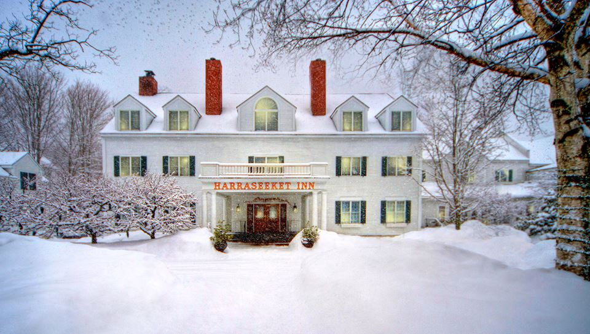
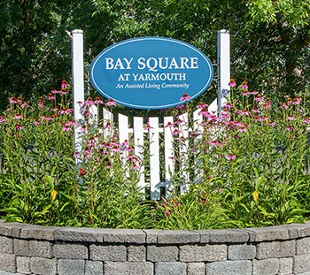
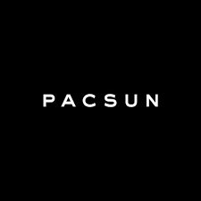
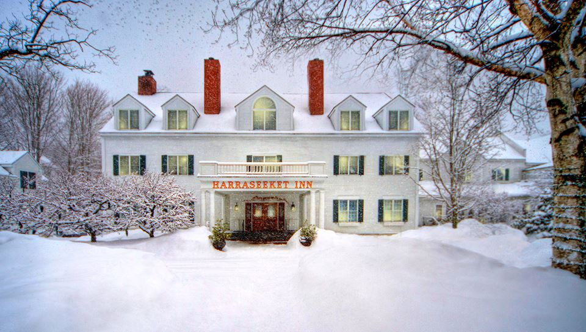
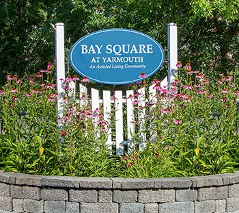
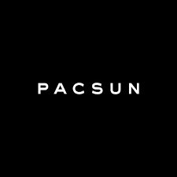

Benjahmin Leverett
Cell: (207) 712-7551 | Benjahmin.leverett@maine.edu
School Address: Orono, ME 04469
Permanent Address: 463 Mountfort Rd., North Yarmouth, ME, 04097
Education
University of Maine '19, Orono, ME
Finance major
Activities: Soccer team, Investment Club
Experience
Harraseeket Inn
Busser/Server
Freeport, ME
May 2015 - Nov 2016
Performed miscellaneous kitchen duties, cleared tables, served customers, restocked breakfast buffet in mornings. Proactively engaged in assisting other team members/staff with additional work assignments/projects as needed.
Baysquare Assisted Living
Busser/Server
Yarmouth, ME
Jan 2014 - Feb 2015
Performed miscellaneous kitchen duties, cleared tables, served residents, developed lasting relationships with many residents. Gained and enhanced valuable communication and listening skills; increased understanding of effective customer service.
Pac Sun
Sales Associate
Freeport, ME
Apr 2015 - Sep 2015
Restocked clothing, worked the register, folded clothing, dusted, vacuumed, swept the floor, assisted customers with choosing clothes. Utilized effective communication skills, positive attitude, and approachability, in a fast paced customer driven environment.
Skills and Additional Information
Microsoft Windows, Microsoft Word, Microsoft Excel, Microsoft PowerPoint, Experienced
social media user (Twitter, Facebook, etc.) Play club soccer at The University of Maine. Very tech savvy, with the ability to quickly learn. Have been youth soccer coach since freshmen year of high school. Member of community service club in high school. Conducted a two-week long community service project during second semester of Senior year to help conserve the land around Knights Pond in Cumberland, Maine. Intermediate code writer for html.